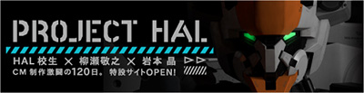

新CMのコンセプトは「量産機になるな。」
たった一人でも、傷つきながら必死に戦う主人公機は、どんな壁にぶつかっても夢に向かって挑み続ける、若者たちの象徴でもあります。
夢があるなら、つくりたいものがあるなら、周りに合わせる必要なんかない。みんなと違っていることは、武器だ。 自分を信じて、自分のやりたいことを貫け。自分だけの自由を手に入れろ―――。
このCMには、そして、PROJECT HALには、夢を追う人の背中を押すメッセージが込められています。

主役機と敵機、2種類のロボットは『攻殻機動隊ARISE』『ガンダム00』など人気作品のメカデザインを担当し、メカニックデザインに3DCGを取り入れたパイオニアでもあるメカデザイナー・柳瀬敬之氏が PROJECT HALのためだけに描き下ろしたオリジナル。
そして監督には映画や特撮・アニメ・ゲームなどのCGムービーを数多く世に送り出してきた株式会社白組のディレクター・岩本晶氏を招へい。 お二人には実際に学生の制作現場にもたびたび足を運んでいただき、アドバイザーとしても、学生たちの制作をバックアップしていただきました。
さらに『永遠の0』『STAND BY ME ドラえもん』など、劇場映画やTVCM、アニメーション、CGの制作を幅広く手がける映像制作プロダクション・ロボットもアドバイザーとして参加。
CM楽曲を担当したのはメロディアス＆エモーショナルなラウドロックで若者たちから絶大な指示を得ているMY FIRST STORY。PROJECT HALのメンバーとも同年代でもある彼らの力強いシャウトが印象的な、まさにプロジェクトメンバーのFIRST STORYにふさわしい一曲となりました。
アニメやCG、ゲーム、ミュージック業界を目指す学生たちが、その第一線で活躍するプロのクリエイターたちと一丸となって、「PROJECT HAL」という前代未聞の取り組みを実現させたのです。